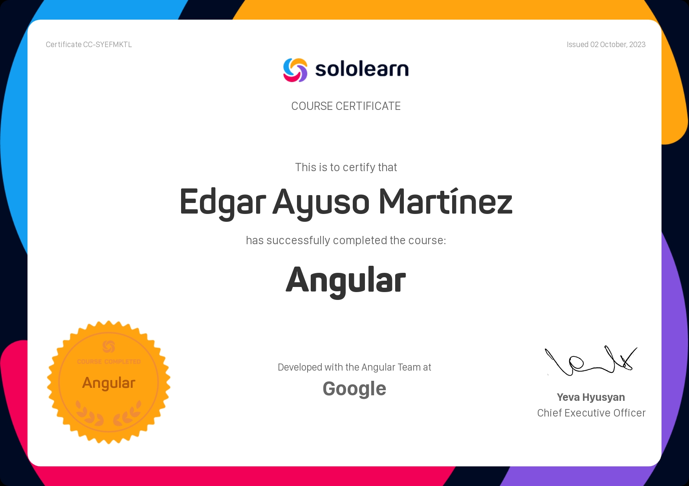
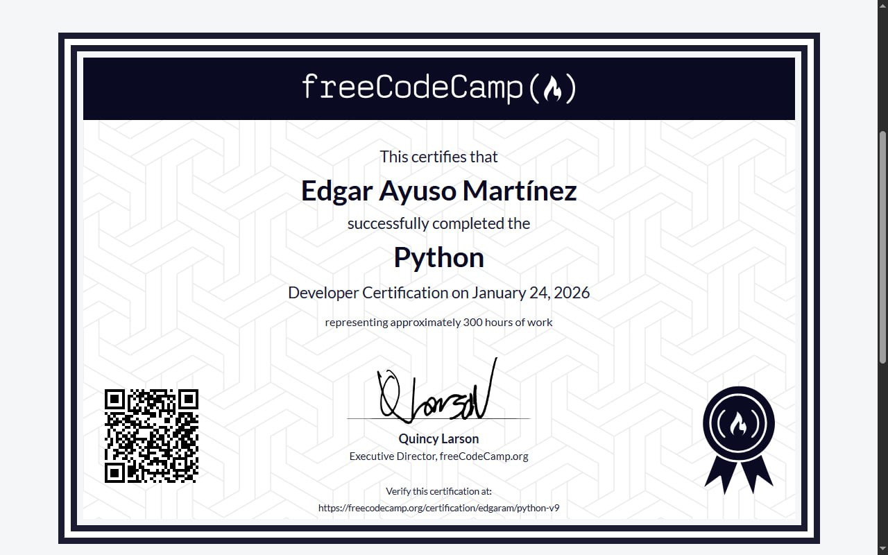
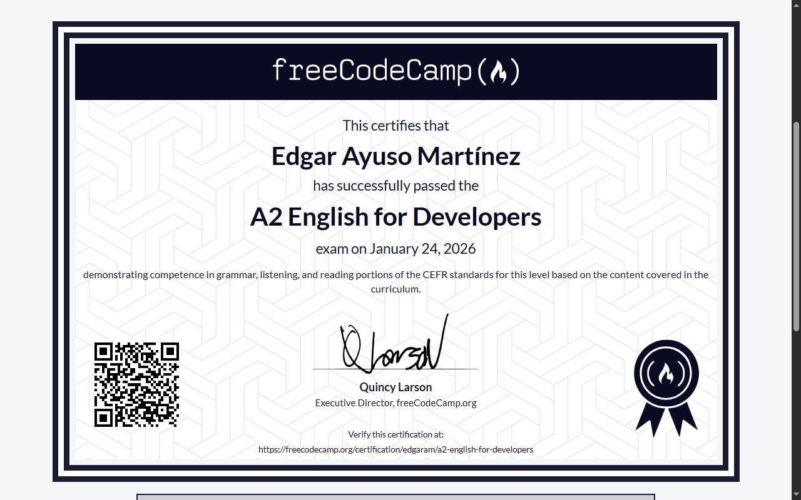

Personal data
-
Name:
Edgar Ayuso Martínez
-
Age:
18
-
Country:
Cuba
Social Medias
A little bit about me
Coding
Four years ago, I started learning programming on mobile apps like Grasshopper and Sololearn, completing several courses on HTML, PHP, JavaScript, and Angular. I used that knowledge to develop some projects, which unfortunately I no longer have.



Later I moved into Python, completing courses such as FreeCodeCamp's. I now focus on building secure Python applications using modern cryptography techniques—for example, NotEd, one of my personal projects. I'm also passionate about data science: I built a solid foundation while developing NumChat, another personal project, using libraries like pandas and Matplotlib. Currently I'm exploring artificial intelligence and machine learning, applying these technologies in practical Python projects.

Languages
Since I am from Cuba, I speak Spanish natively. On the other hand, I have successfully completed many English courses. For example, a two-year English course at a language school, and the A2 and B2 English for Developers courses at freeCodeCamp. I also constantly practice my English because it is very common and important in the tech industry. All of this gives me a broad understanding of both basic and advanced English topics, as well as excellent performance in reading, listening, and speaking. Since I am often involved in technology through English, I have developed a wide range of related vocabulary that is constantly growing.
